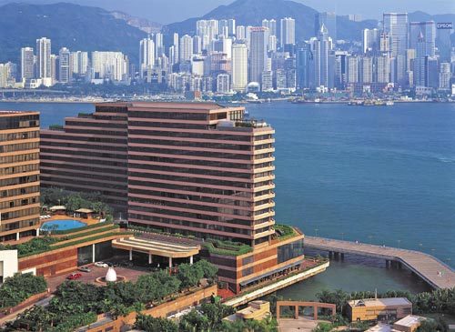
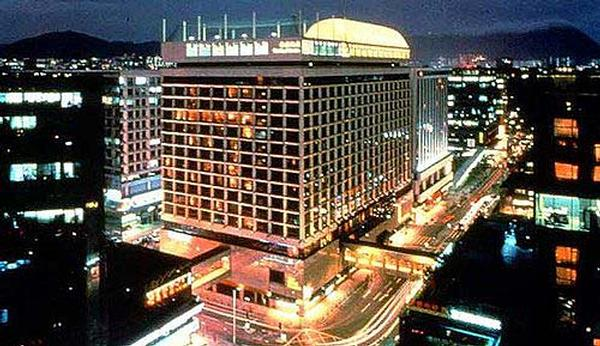
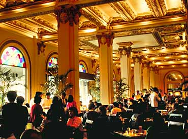
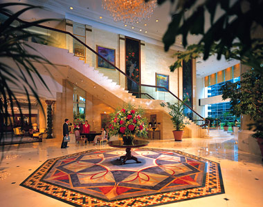
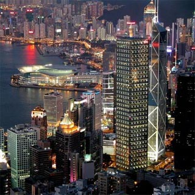
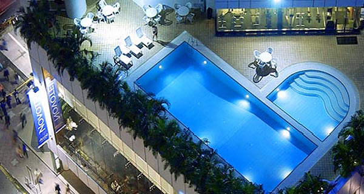
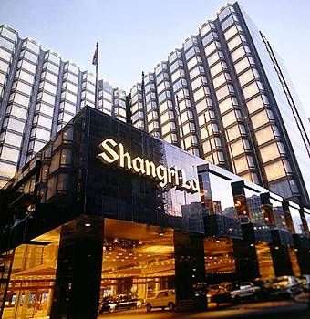
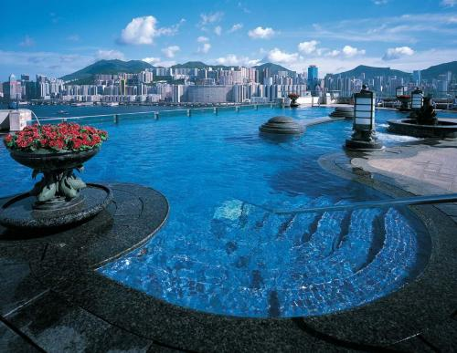

Accomodation in Hong Kong
Dreaming of 5 star luxury on your stay in Hong Kong, but afraid of the high-end price? If luxury, an attention to detail, and excellent customer service are what you look for in your accommodation, then why not treat yourself by staying in one of our 5 star hotels in Hong Kong? With our great rates on Hong Kong luxury hotels, anyone and everyone can afford the lavishly appointed rooms and exceptional service that a 5 star Hong Kong hotel guarantees. Rest assured that by booking your 5 star Hong Kong hotel through Wotif.com you will receive instant confirmation, and all bookings are backed by a 24/7 Customer Service Centre. So why not spoil yourself with that extra indulgence and elegance you deserve? The below list of Hong Kong luxury accommodation includes five star hotels, serviced apartments, BandBs and Caravan Parks.
Hong Kong Island:
Stay in our Hong Kong Island hotels and be in the heart of the city. No visit to Hong Kong Island is complete without a trip on the Peak Tram up to Victoria Peak. Victoria Peak is the highest mountain on Hong Kong Island, standing 552m above sea level. The newly constructed Peak Tower is a great place to appreciate the 360 degree views of the Island. While you are on the Island, be sure to stroll along the Central Promenade and take in scenic views of Victoria Harbour, the Hong Kong Convention and Exhibition Centre, Central Plaza and the Star Ferry Piers. Also not to be missed is Man Mo Temple, the Island's oldest temple built in the 1840s, it is located on Hollywood Road. For a little free fun why not try out the world's longest outdoor escalator which runs Central to Soho and further up to the mid-level residential developments. While staying in our Hong Kong Island hotels, the Aberdeen district should not be missed. Visit Aberdeen Harbour and see the amazing juxtaposition between the modern and the traditional ?as residential high-rises cover the hillsides, hundreds of people live on traditional fishing junks in the Harbour. Also in the area is Ocean Park, a popular theme park which covers 80 hectares and features thrill rides, an aquarium, giant pandas and displays on their marine conservation programs.
  {kind=link}
{kind=link}
{kind=link}
Kowloon:
While staying in our Kowloon hotels, be sure to treat your taste buds and sample some of the local cuisine. For delicious seafood visit the small fishing village of Lei Yue Mun on the Kowloon side of the eastern entrance to Hong Kong Harbour. For restaurants specialising in Nothern and Southern Chinese food visit Whampoa Gourmet Place in Hung Hom. Or visit Knutsford Terrace, which is renowned as the culinary capital of Hong Kong and is located behind the Miramar Hotel on Nathan Road.
 {kind=link}
{kind=link}
{kind=link}
New Territories:
Stay in our Hong Kong New Territories hotels and discover all this scenic area has to offer. Visit Kat Hing Wai and see a Ming dynasty walled village, believed to be over 400 years old. The village, with walls built of blue bricks, is still inhabited by descendants of the Tang clan, one of the five main clans to settle in the New Territories. While staying in our New Territories hotels, walk the Ping Shan Heritage Trail and see some of the area's most significant historical sites built by the Tang clan hundreds of years ago. Along the trail you will find: Hong Kong's oldest pagoda, Tsui Shing Lau, which is believed to be over 600 years old; the Tang Ancestral Hall, built between 1662 and 1723 in the reign of Emperor K'ang Hsi; Kun Ting Study Hall; two Chinese temples and various other historical buildings.
  {kind=link}
{kind=link}
{kind=link}
Source: http://www.wotif.com/hotels/hong-kong-5-star-hotels.html